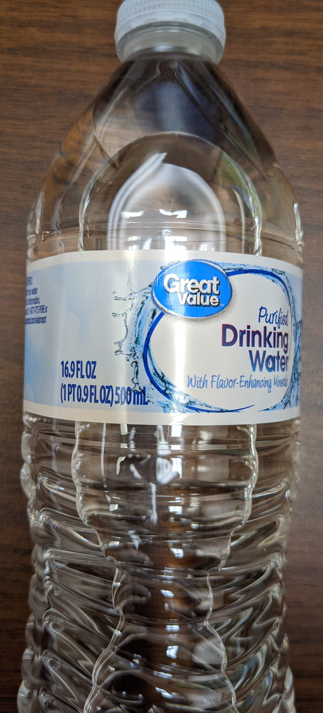

Main Navigation Links
Objectives
The Measurements and Units project is designed to:
(1.) Meet one of the learning objectives of the VCCS (Virginia Community College System) standards for:
MTH 111:
Basic Technical Mathematics
(Provides a foundation in mathematics with emphasis in arithmetic, unit conversion, basic
algebra, geometry and trigonometry.).
MTH 130:
Fundamentals of Reasoning
(Presents elementary concepts of algebra, linear graphing, financial literacy, descriptive
statistics, and measurement & geometry. ).
MTH 131:
Technical Mathematics
(Presents algebra through unit conversion, trigonometry, vectors, geometry, and complex
numbers.).
MTH
133: Mathematics for Health Professions
(Presents in context the arithmetic of fractions and decimals, the metric system and dimensional
analysis, percents, ratio and proportion, linear equations, topics in statistics,
topics in geometry, logarithms, topics in health professions including dosages, dilutions and IV
flow rates.).
MTH 154:
Quantitative Reasoning
[Solve real-life problems requiring interpretation and comparison of various representations of
ratios (i.e., fractions, decimals, rates, and percentages including part to part and part to whole,
per capita data, growth and decay via absolute and relative change)].
(2.) Meet the QM (Quality Matters) and USDOE (United States Department of Education) requirements for
distance education as regards the
provision of RSI (Regular and Substantive Interaction).
Federal Register: Distance Education and Innovation
St. John's University: New Federal Requirements for Distance Education: Regular and
Substantive Interaction (RSI)
Student – Content Interaction: Very high
Student – Student Interaction: Flexible
Student – Faculty Interaction: Flexible
(3.) Convert between International Metric System of units and United States Customary System of units.
Skills Measured/Acquired
(1.) Use of prior knowledge
(2.) Critical Thinking
(3.) Interdisciplinary connections/applications
(4.) Technology
(5.) Active participation through direct questioning
(6.) Research
Project Requirements
(1.) This is an individual project.
It is not a group project.
Students may work together. However, each student must submit his/her/their own project.
(2.) The items only allowed in the project include containers of:
(a.) Food (includes fruits)
(b.) Drinks (excluding alcoholic drinks)
(c.) Soaps
(d.) Lotion
(e.) Paint
If you are unsure whether any container is permitted, please ask the Professor accordingly.
(3.) The image of the container used must be included.
Please use the Insert → Pictures icon to insert the image directly.
The image should be very clear.

(4.) Please use only the three tables given to you.
The use of any other table will lead to major deduction of points.
The three tables are:
Table 1
| Prefix | Symbol | Multiplication Factor |
|---|---|---|
| yocto | y | $10^{-24}$ |
| zepto | z | $10^{-21}$ |
| atto | a | $10^{-18}$ |
| femto | f | $10^{-15}$ |
| pico | p | $10^{-12}$ |
| nano | n | $10^{-9}$ |
| micro | $\mu$ | $10^{-6}$ |
| milli | m | $10^{-3}$ |
| centi | c | $10^{-2}$ |
| deci | d | $10^{-1}$ |
| deka | da | $10^1$ |
| hecto | h | $10^2$ |
| kilo | K | $10^3$ |
| mega | M | $10^6$ |
| giga | G | $10^9$ |
| tera | T | $10^{12}$ |
| peta | P | $10^{15}$ |
| exa | E | $10^{18}$ |
| zetta | Z | $10^{21}$ |
| yotta | Y | $10^{24}$ |
Table 2
| Measurement | Customary | Customary | Unit Conversion Factor |
|---|---|---|---|
| Length | inch (in) | foot (ft) | $12\:inches = 1\:ft$ |
| Length | foot (ft) | yard (yd) | $3\:ft = 1\:yd$ |
| Length | yard (yd) | mile (mi) | $1760\:yd = 1\:mi$ |
| Length | foot (ft) | mile (mi) | $5280\:ft = 1\:mi$ |
| Length | rod/pole | yards (yd) | $1\:rod = 5.5\:yd$ |
| Length | furlong | rod | $1\:furlong = 40\;rod$ |
| Length | fathom | feet (ft) | $1\:fathom = 6\;ft$ |
| Length | league/marine | nautical miles | $1\:league = 3\;nautical\;\;miles$ |
| Mass | pound (lb) | ounce (oz) | $1\:lb = 16\:oz$ |
| Mass | short ton (ton) | pound (lb) | $1\:short\:ton = 2000\:lb$ |
| Mass | long ton | pound (lb) | $1\:long\:ton = 2240\:lb$ |
| Mass | stone | pound (lb) | $1\:\:stone = 14\:lb$ |
| Mass | long ton | stone | $1\:long\:ton = 160\:stones$ |
| Area | acre (acre) | square feet ($ft^2$) | $1\:acre = 43560\:ft^2$ |
| Volume | quart (qt) | pint (pt) | $1\:qt = 2\:pt$ |
| Volume | pint (pt) | cup (cup) | $1\:pt = 2\:cups$ |
| Volume | quart (qt) | cup (cup) | $1\:qt = 4\:cups$ |
| Volume | quart (qt) | fluid ounce (fl. oz) | $1\:qt = 32\:fl.\:oz$ |
| Volume | pint (pt) | fluid ounce (fl. oz) | $1\:pt = 16\:fl.\:oz$ |
| Volume | cup (cup) | fluid ounce (fl. oz) | $1\:cup = 8\:fl.\:oz$ |
| Volume | gallon (gal) | quart (qt) | $1\:gal = 4\:qt$ |
| Volume | gallon (gal) | quart (pt) | $1\:gal = 8\:pt$ |
| Volume | gallon (gal) | cup (cup) | $1\:gal = 16\:cups$ |
| Volume | gallon (gal) | fluid ounce (fl. oz) | $1\:gal = 128\:fl.\:oz$ |
| Volume | gallon (gal) | cubic inches ($in^3$) | $1\:gal = 231\:in^3$ |
Table 3
| Measurement | Metric | Customary | Unit Conversion Factor |
|---|---|---|---|
| Length | meter (m) | foot (ft) | $1\:ft = 0.3048\:m$ |
| Length | kilometer (km) | nautical miles | $1\:nautical\;\;miles = 1.852\;km$ |
| Mass | gram (g) | pound (lb) | $1\:lb = 453.59237\:g$ |
| Mass | metric ton (tonne) | kilogram (kg) | $1\:tonne = 1000\:kg$ |
| Volume |
liter or cubic decimeters (L or $dm^3$) |
gallons (gal) | $1\:L = 0.26417205\:gal$ |
(5.) As a student, you have free access to Microsoft Office suite of apps.
(a.) Please download the desktop apps of Microsoft Office on your desktop/laptop (Windows and/or
Mac only).
Do not use a chromebook.
Do not use a tablet/iPad.
Do not use a smartphone.
Do not use the web app/sharepoint access of Microsoft Office.
(Please contact the IT/Tech Support for assistance if you do not know how to download the desktop
app.)
In that regard, the project is to be typed using the desktop version/app of Microsoft Office Word
only.
(b.) The file name for the Microsoft Office Word project should be saved as:
firstName–lastName–project
Use only hyphens between your first name and your last name; and between your last name and the word,
project.
No spaces.
(c.) For all English terms/work (entire project): use Times New Roman; font size of 14; line spacing of
1.5.
Further, please make sure you have appropriate spacing between each heading and/or section as
applicable.
Your work should be well-formatted and visually appealing.

(d.) For all Math terms/work: symbols, variables, numbers, formulas, expressions, equations and
fractions among others,
the Math Equation Editor is required.
(i.) The font is set to Cambria Math by default (set it to that font if it is not); font size of 14, and
align accordingly (preferably left-aligned).
(ii.) To ensure appropriate spacing between your Math work, use a line spacing of 2.0.
Alternatively, you may use line spacing of 1.5 but insert a space after each equation as applicable.
Your work should be well-formatted, organized, well-spaced (not compact), and visually appealing.


(e.) Include page numbers. You may include at the top of the pages or at the bottom of the pages but not
both.

(6.) All work must be shown.
If you use any variables, please define your variables accordingly.
You may use any or a combination of the 3 methods taught/discussed:
(a.) First Method: Unity Fraction Method
(b.) Second Method: Proportional Reasoning Method
(c.) Third Method: Fast Proportional Reasoning Method
If you do not want to use any of these method, you are welcome to use any other pre-approved
appropriate method.
(7.) Please ensure your answer matches the converted quantity and unit on the container you used.
Do not approximate intermediate calculations.
If the converted quantity on the container was rounded:
(a.) First, write your answer as is (exact value)
(b.) Second, round accordingly to match the converted quantity on the container. (approximate value)
(c.) Third, specify the type of rounding that was done (how many decimal places, how many significant
digits, etc.)
(8.) (a.) Please review the examples I did.
You may not do the same examples that I did.
These are the minimum expectations.
Creativity is always welcome.
NOTE: I did the conversion of one unit to another unit (customary unit to metric unit).
However, please make sure you do two conversions: customary unit to metric unit; and metric unit
to customary unit.
(b.) Please review the samples from my previous students also.
You may not submit any of their containers.
(c.) References were not required in previous projects.
However, as at 05/09/2024, references are required, going forward.
It is important to cite your references in any academic paper.
(9.) Mr. C (SamDom For Peace) wants you to do this real-world project very well.
Hence, he highly recommends that you submit a draft so he can give you feedback.
(a.) First: (Required): Please submit a clear image of the entire container in the
Projects: Containers page in the Canvas course.
The clear image of the entire container should clearly show the units on the container.
I shall review and respond.
(b.) Second: (Highly Recommended): When your container is approved, please submit your draft.
Draft projects are not graded because they are drafts. They are only for feedback.
If your professor gives you an opportunity to submit a draft, please use that opportunity.
Submitting drafts is highly recommended. Submitting drafts is not required.
It is highly recommended because I want to give you the opportunity to do your project very well and
make an excellent
grade in it.
Please turn in your draft in the Discussions page → Projects: Drafts forum in
the Canvas course
(if you would like your colleagues to read my comments and avoid any mistakes that you made).
You may also send it to me via email (if you do not want your colleagues to see my comments and learn
from the comments).
I shall review and provide feedback.
Then, review my feedback and make changes as necessary.
Keep working with me until I give you the green light to turn in your actual project. This must
be done before
the final due date to turn in the actual project.
When everything is fine (after you make changes as applicable based on my feedback), please submit your
work in the appropriate area: Assignments page → Measurements and Units Project
in the Canvas course.
Only the projects submitted in the appropriate place in the Canvas course are graded.
(10.) All work must be turned in by the final due date to receive credit.
Please note the due dates listed in the course syllabus for the submission of the draft and the actual
project.
In the course syllabus, we have the:
(a.) Initial due date for the Project Draft: Please turn in your draft.
(b.) Initial due date for the Project: If your draft is not ready for submission, keep working with me.
Make changes
based on my feedback and keep working with me until I give you the green light to turn it in.
If you prefer not to turn in a draft, please review all the resources provided for you and do your
project well and
submit.
(c.) Final due date for the Project Draft: This is necessary if you want a written feedback for your
draft.
After this date, written feedback would not be provided for your draft. However, verbal feedback would
still be provided
during Office Hours/Student Engagement Hours/Live Sessions.
(d.) Final due date for the Project: All work must be turned in by this date to receive credit.
After this date, no work may be accepted.
Example Guides
Examples
NOTE: Unless specified otherwise, please:(1.) Do not approximate intermediate calculations.
(2.) Write the exact value of the answer.
(3.) Write the approximate value of the answer to match the value on the container.
(4.) Specify the type of rounding done to your exact value to match the value on the container.
| Name: | (Registered name as is in the Canvas course) |
| Instructor: | Samuel Chukwuemeka |
| Objective: | To convert a measurement from a unit to another unit. |
| Measurement: | Mass |
| 1st: Given Unit: | Customary unit (Ounce) |
| To Convert to: | Metric unit (Gram) |
| 2nd: Given Unit: | Metric unit (Gram) |
| To Convert to: | Customary unit (Ounce) |
| Container Used: | Soap (Please see the bottom left corner.) |

|
|
| Calculations: |
References: (New addition. Not in previous Student Projects.) |
Cite your source(s) accordingly. Indicate the type of citation format. |
Convert $4.25\:oz$ to $g$
From Given Tables:
$
1\:lb = 16\:oz \\[3ex]
1\:lb = 453.59237\:g \\[3ex]
1\:lb = 1\:lb \\[3ex]
\implies 16\:oz = 453.59237\:g \\[3ex]
Let\:\:p = mass\:\:of\:\:4.25\:oz\:\:in\:\:g \\[3ex]
\underline{Second\:\:Method:\:\:Proportional\:\:Reasoning\:\:Method} \\[3ex]
$
| $oz$ | $g$ |
|---|---|
| $16$ | $453.59237$ |
| $4.25$ | $p$ |
$ \dfrac{p}{4.25} = \dfrac{453.59237}{16} \\[5ex] Multiply\:\:both\:\:sides\:\:by\:\:4.25 \\[3ex] 4.25 * \dfrac{p}{4.25} = 4.25 * \dfrac{453.59237}{16} \\[5ex] p = \dfrac{4.25 * 453.59237}{16} \\[5ex] p = \dfrac{1927.76757}{16} \\[5ex] p = 120.485473 \\[3ex] p \approx 120\:g...rounded\:\:to\:\:the\:\:nearest\:\:whole\:\:number \\[3ex] \therefore 4.25\:oz \approx 120\:g \\[3ex] $ This confirms the quantity in $g$ (in parenthesis) in the soap container.
| Name: | (Registered name as is in the Canvas course) |
| Instructor: | Samuel Chukwuemeka |
| Objective: | To convert a measurement from a unit to another unit. |
| Measurement: | Volume |
| 1st: Given Unit: | Customary unit (Fluid Ounce) |
| To Convert to: | Metric unit (Milliliters) |
| 2nd: Given Unit: | Metric unit (Milliliters) |
| To Convert to: | Customary unit (Fluid Ounce) |
| Container Used: | Water (Please see the top center corner.) |
|
 |
|
Convert $16.9\:fl\:\:oz$ to $mL$
From Given Tables:
$
1\:L = 0.26417205\:gal \\[3ex]
1\:gal = 4\:qt \\[3ex]
1\:qt = 4\:cups \\[3ex]
1\:cup = 8\:fl.\:oz \\[3ex]
$
Based on what we were given:
Let us first convert it to liters ($L$)
Then, we will convert from liters ($L$) to milliliters ($mL$)
$
\underline{First\:\:Method:\:\:Unity\:\:Fraction\:\:Method} \\[3ex]
16.9\:fl\:oz\:\:to\:\:L \\[3ex]
Set\:\:it\:\:up\:\:and\:\:check\:\:to\:\:make\:\:sure\:\:it\:\:is\:\:correct \\[3ex]
16.9\:fl\:oz * \dfrac{.....L}{.....gal} * \dfrac{.....gal}{.....qt} * \dfrac{.....qt}{.....cup} *
\dfrac{.....cup}{.....fl.\:oz} \\[5ex]
16.9\:fl\:oz * \dfrac{1\:L}{0.26417205\:gal} * \dfrac{1\:gal}{4\:qt} * \dfrac{1\:qt}{4\:cup} *
\dfrac{1\:cup}{8\:fl.\:oz} \\[5ex]
= \dfrac{16.9 * 1 * 1 * 1 * 1}{0.26417205 * 4 * 4 * 8} \\[5ex]
= \dfrac{16.9}{33.8140224} \\[5ex]
= 0.4997926541\:L \\[3ex]
Convert\:\:0.4997926541\:L\:\:to\:\:mL \\[3ex]
\underline{First\:\:Method:\:\:Unity\:\:Fraction\:\:Method} \\[3ex]
Set\:\:it\:\:up\:\:and\:\:check\:\:to\:\:make\:\:sure\:\:it\:\:is\:\:correct \\[3ex]
0.4997926541\:L * \dfrac{.....mL}{.....L} \\[5ex]
= 0.4997926541\:L * \dfrac{1\:mL}{10^{-3}\:L} \\[5ex]
= 0.4997926541\:L * \dfrac{1\:mL}{0.001\:L} \\[5ex]
= 499.7926541\:mL \\[3ex]
499.7926541\:mL \approx 500\:mL \\[3ex]
$
This confirms the quantity in $mL$ in the water container.
Student: Sir, you could have used the direct conversion from gallons to cups...
and bypass quarts
$
16.9\:fl\:oz * \dfrac{.....L}{.....gal} * \dfrac{.....gal}{.....cup} *
\dfrac{.....cup}{.....fl.\:oz} \\[5ex]
16.9\:fl\:oz * \dfrac{1\:L}{0.26417205\:gal} * \dfrac{1\:gal}{16\:cups} * \dfrac{1\:cup}{8\:fl.\:oz}
\\[5ex]
$
Teacher: That is right!
You are correct.
But, what if you were given a table that does not have that direct conversion?
Student: Then, I would use what I was given.
But, in this case; we were given that direct conversion.
| Name: | (Registered name as is in the Canvas course) |
| Instructor: | Samuel Chukwuemeka |
| Objective: | To convert a measurement from a unit to another unit. |
| Measurement: | Lengths (Width by Length) |
| 1st: Given Unit: | Customary unit (in by in) |
| To Convert to: | Metric unit (cm by cm) |
| 2nd: Given Unit: | Metric unit (cm by cm) |
| To Convert to: | Customary unit (in by in) |
| Container Used: | Hand Wipes (Please see the bottom center corner.) |

|
|
Convert $5.7\:in\:\:by\:\:7.5\:in$ to $cm\:\:by\:\:cm$
$
Width = 5.7\:in \\[3ex]
Length = 7.5\:in \\[3ex]
$
From Given Tables:
$
1\:ft = 0.3048\:m \\[3ex]
12\:inches = 1\:ft \\[3ex]
1\:ft = 12\:inches \\[3ex]
1\:ft = 1\:ft \\[3ex]
\implies 0.3048\:m = 12\:inches \\[3ex]
$
We shall use the First Method to convert the width.
We shall use the Second Method to convert the length.
Use any method(s) you prefer.
$
\underline{First\:\:Method:\:\:Unity\:\:Fraction\:\:Method} \\[3ex]
Convert\:\:the\:\:Width \\[3ex]
5.7\:in \:\:to\:\: cm \\[3ex]
Set\:\:it\:\:up\:\:and\:\:check\:\:to\:\:make\:\:sure\:\:it\:\:is\:\:correct \\[3ex]
5.7\:in * \dfrac{.....m}{.....in} * \dfrac{.....cm}{.....m} \\[5ex]
5.7\:in * \dfrac{0.3048\:m}{12\:in} * \dfrac{1\:cm}{10^{-2}\:m} \\[5ex]
= 5.7\:in * \dfrac{0.3048\:m}{12\:in} * \dfrac{1\:cm}{0.01\:m} \\[5ex]
= \dfrac{5.7 * 0.3048 * 1}{12 * 0.01} \\[5ex]
= \dfrac{1.73736}{0.12} \\[5ex]
= 14.478\:cm \approx 14.5\:cm \\[3ex]
\underline{Second\:\:Method:\:\:Proportional\:\:Reasoning\:\:Method} \\[3ex]
Convert\:\:the\:\:Length \\[3ex]
Let\:\:p = length\:\:of\:\:7.5\:in\:\:in\:\:m \\[3ex]
Let\:\:c = length\:\:of\:\:p\:m\:\:in\:\:cm \\[3ex]
$
Based on what we were given:
We need to first convert to meters ($m$)
Then, we will convert from meters ($m$) to centimeters ($cm$)
From Given Tables:
$
1\:ft = 0.3048\:m \\[3ex]
12\:inches = 1\:ft \\[3ex]
1\:ft = 12\:inches \\[3ex]
1\:ft = 1\:ft \\[3ex]
\implies 0.3048\:m = 12\:inches \\[3ex]
1\:cm = 10^{-2}\:m \\[3ex]
1\:cm = 0.01\:m
$
| $in$ | $m$ |
|---|---|
| $12$ | $0.3048$ |
| $7.5$ | $p$ |
$ \dfrac{p}{7.5} = \dfrac{0.3048}{12} \\[5ex] Multiply\:\:both\:\:sides\:\:by\:\: 7.5 \\[3ex] 7.5 * \dfrac{p}{7.5} = 7.5 * \dfrac{0.3048}{12} \\[5ex] p = \dfrac{7.5(0.3048)}{12} \\[5ex] p = \dfrac{2.286}{12} \\[5ex] p = 0.1905\:m \\[3ex] $
| $m$ | $cm$ |
|---|---|
| $0.01$ | $1$ |
| $0.1905$ | $c$ |
$ \dfrac{c}{1} = \dfrac{0.1905}{0.01} \\[5ex] c = 19.05\:cm \approx 19.1\:cm $
The results confirm the quantities in cm in the hand wipe container.
Student Project Samples
Sample 1: Erik Hand Sanitizer ContainerSample 2: Benito Fruit Juice Container
Sample 3: Annan: Red Bull Can
Sample 4: Haven: Germicidal Wipe Conditioner
Sample 5: Maximus: Purell Hand Sanitizer Container
Sample 6: McDorman: Disinfecting Wipes Container
Sample 7: Davis: Apple & Cinnamon Instant Oatmeal Container
Sample 8: Sconyers: Purple Conditioner
Sample 9: Mea: Chu Hou Paste Jar (Black bean paste)
Sample 10: Sarah: Vaseline Container
Sample 11: Dorton: Cantu Shea Butter Sulfate-Free Cleansing Cream Shampoo
Sample 12: Correa: Reese’s Take 5 Candy Bar
Sample 13: Hannah: Yoplait Yogurt Container
Sample 14: Elsa: Softsoap body soap bottle
Sample 15: Mikal: Peanut Butter Jar
Sample 16: Mikalah: Dr. Pepper bottle
Sample 17: Stephanie: Tapatio Hot Sauce
Sample 18: Maria: Softsoap body soap bottle
Sample 19: Brianna: Chobani Greek Vanilla Yogurt
The teacher should guide each student to the successful completion of the project.
Let students know you are willing to help.
References
Chukwuemeka, S.D (2016, April 30). Samuel Chukwuemeka Tutorials - Math, Science, and Technology.
Retrieved from https://mathematicscourses.github.io/QuantitativeReasoning/
Bennett, J. O., & Briggs, W. L. (2019). Using and Understanding Mathematics: A Quantitative Reasoning
Approach. Pearson.
Bennett, J. O., & Briggs, W. L. (2023). Using and Understanding Mathematics: A Quantitative Reasoning
Approach. Pearson.
CrackACT. (n.d.). Retrieved from http://www.crackact.com/act-downloads/
CMAT Question Papers CMAT Previous Year Question Bank - Careerindia. (n.d.).
https://www.careerindia.Com. Retrieved May 30, 2019,
from https://www.careerindia.com/entrance-exam/cmat-question-papers-e23.html
CSEC Math Tutor. (n.d). Retrieved from https://www.csecmathtutor.com/past-papers.html
Essentials of the SI: Base & derived units. (2019). Nist.gov.
https://physics.nist.gov/cuu/Units/units.html
MySchoolGist - Free West African Senior School Certificate Examination (WASSCE) Past Questions. (n.d).
Retrieved from https://www.myschoolgist.com/ng/free-waec-past-questions-and-answers/
National Institute of Standards and Technology, U.S Department of Commerce - The International System of
Units (SI). (n.d). Retrieved from
https://www.nist.gov/sites/default/files/documents/2016/12/07/sp330.pdf
Free Jamb Past Questions And Answer For All Subject 2020. (2019, January 31). Vastlearners.
https://www.vastlearners.com/free-jamb-past-questions/
Mathematics. (n.d.). waeconline.org.ng. Retrieved May 30, 2020, from
https://waeconline.org.ng/e-learning/Mathematics/mathsmain.html
NSC Examinations. (n.d.). www.education.gov.za.
https://www.education.gov.za/Curriculum/NationalSeniorCertificate(NSC)Examinations.aspx
51 Real SAT PDFs and List of 89 Real ACTs (Free) : McElroy Tutoring. (n.d.).
Mcelroytutoring.com. Retrieved December 12, 2022,
from
https://mcelroytutoring.com/lower.php?url=44-official-sat-pdfs-and-82-official-act-pdf-practice-tests-free